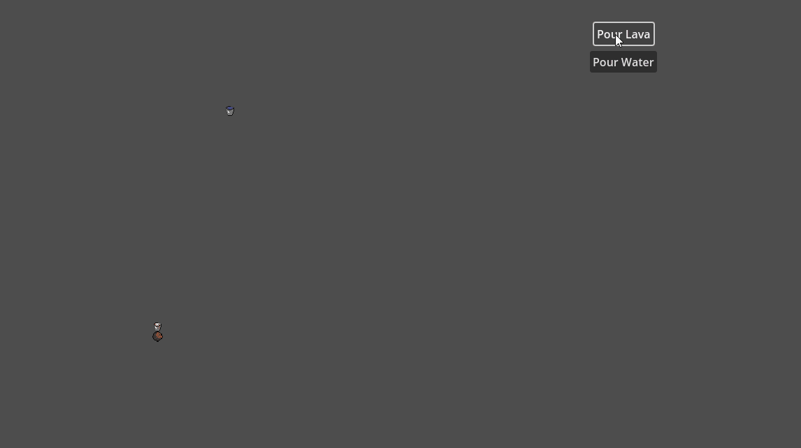

Game Overview

The Coco-nut Crisis is a short prototype 2-player 2D platformer. Both players play as coconuts that must carry a bucket of lava up to the volcano to appease it. The logic is a little skewed, but they're nuts! Both players must communicate as they traverse up the volcano, as they rely on each other to jump over hurdles.
The core mechanic revolves around the environmental interaction of water combining with lava to form stone, which allows the player to create new platforms and sometimes obstacles for themselves.
This was made in a team of 4 in 2 weeks for NMSU's course CSCI 4255: Digital Game Design.
How I Contributed
- Designed and implemented the bucket pouring system for both water and lava.
- Developed the lava-water collision logic, transforming interacting fluids into solid stone to dynamically affect how the level is played.
- Implemented player-environment collision.
- Integrated and debugged code from multiple teammates, resolving logic conflicts and improving overall system stability.
- Extended and refined existing teammate systems where needed to support core mechanics and gameplay flow.
What I learned

This project primarily focused on the way players collaborate within gaming experiences. I put myself in the shoes of someone who wants to play a quick game with my friend and consider how I can provide constant feedback similar to how Overcook does it.
Additionally, this was the time when I practiced creating code logic for something that hadn't been made yet. While I waited for the two players to be created, I developed the buckets and their contents to be usable with anything, not just the players!
What's Next
I hope to continue working on this project and add more levels, characters, and features to make the user exprience more enjoyable. I also want to explore more complex interactions between players and the environment.
- Implement a better UI and create more stakes
- Implement a scoring system
- Create more levels
- Implement more obstacles for the Water Coconut
View on GitHub here!